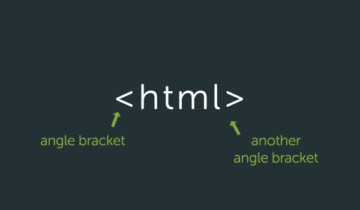
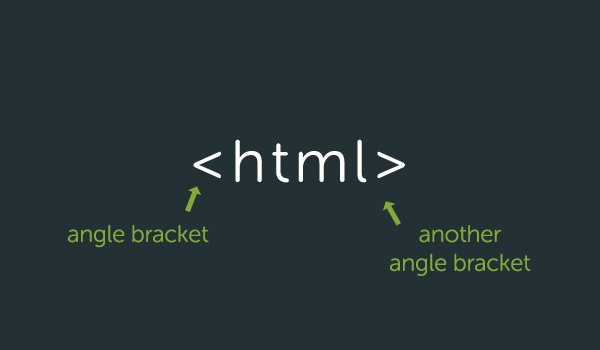
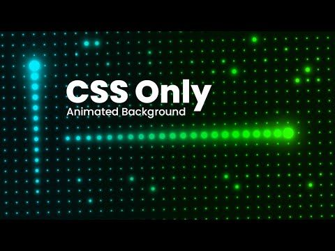

HTML
HTML stands for HyperText Markup Language. It is used on the frontend and gives the structure to the webpage which you can style using CSS and make interactive using JavaScript.
Read more HTML
Web Develpment
Facebook Twitter Google LinkedIn GithubComputers connected to the web are called clients and servers Clients are the typical web user's internet-connected devices (for example, your computer connected to your Wi-Fi, or your phone connected to your mobile network) and web-accessing software available on those devices (usually a web browser like Firefox or Chrome). Servers are computers that store webpages, sites, or apps. When a client device wants to access a webpage, a copy of the webpage is downloaded from the server onto the client machine to be displayed in the user's web browser.
HTML stands for HyperText Markup Language. It is used on the frontend and gives the structure to the webpage which you can style using CSS and make interactive using JavaScript.
Read more HTML
CSS or Cascading Style Sheets is the language used to style the frontend of any website. CSS is a cornerstone technology of the World Wide Web, alongside HTML and JavaScript.
Read more CSS
JavaScript allows you to add interactivity to your pages. Common examples that you may have seen on the websites are sliders, click interactions, popups and so on.
Read more JavaScript